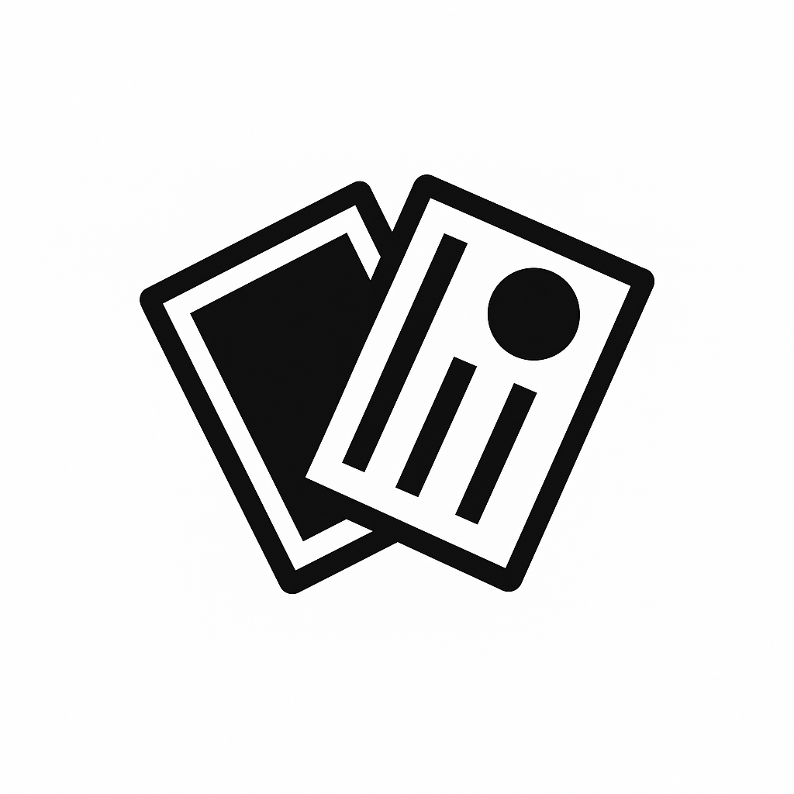

☰

百人一瞬暗記
ログイン
新規登録
小
中
大
競技かるたへ興味のある方はこちらから
ルール解説動画
お知らせ
NEW
・部分的に修正中です！
×
ホーム
句一覧
苦手句リスト
このアプリについて
プライバシーポリシー
お問い合わせ
管理者情報
暗記モードを選んでください
問題の形式
選択式テスト
記述式テスト
出題の方向
上の句 → 下の句
下の句 → 上の句
出題順序
ランダムに開始
1から開始
問題数を設定（1～100問）
テスト開始
回答を確認
答えを見る
← 1つ前の句
次の句へ →
最初から
テスト終了！
モード選択に戻る